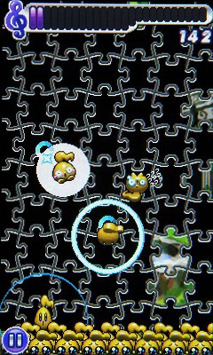
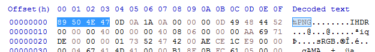
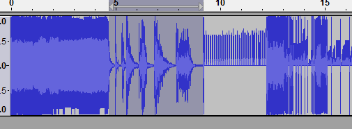
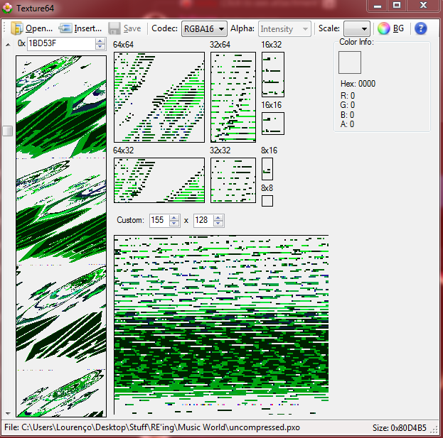
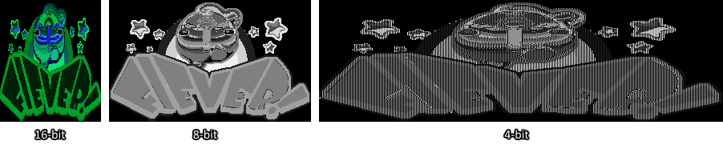
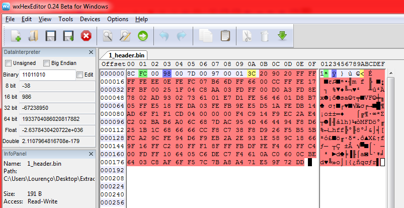
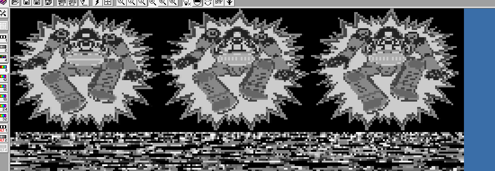
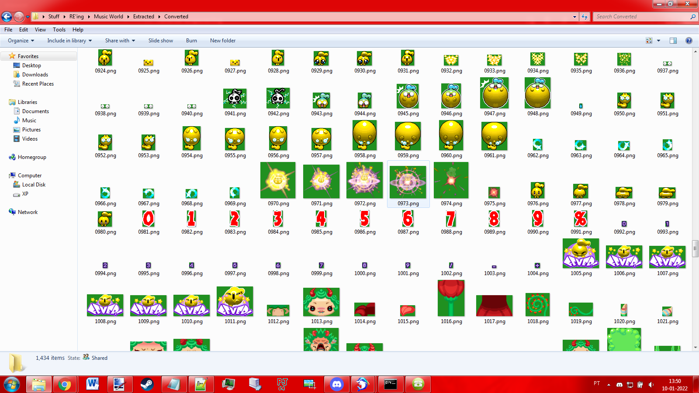

Ripping Assets From An Old Mobile Game - Music World
Published: 22/01/2022
This is a pretty lengthy article, because I cover a lot of the reverse engineering process and explain how I approached stuff (even if it was a dead end in the end). Hopefully leaving my trains of thought like this will teach people about reverse engineering who otherwise wouldn't even know where to begin! Also, I apologize if the website looks a little crude but because I am still in exam season, I haven't had the time to actually make it look presentable. Pure HTML will have to suffice for now...
My very first smartphone was when I was about 13, and it was an LG Cookie Fresh (GS290) and a really finicky touch screen, but overall it was pleasant to use. There was one thing I really loved about the Cookie though, and that was a little game that came bundled with it called Music World. As a rhythm game, it's perfectly alright. It's main problem is that characters can appear on any position of the screen, and annoyingly overlap each other, causing you to fail notes simply because something got in the way, but it had great music and endearing graphics. I'm pretty sure I managed to 'S' almost all the levels, minus some of the harder 'Crazy Mode' ones due to the aformentioned gameplay quirk.

This is one of few screenshots that I can find of the game that isn't taken with a camera, credit to this site.
Last week, when I was taking a break from studying for my insane exam season this semester, I randomly remembered this game and decided to search it up on Google. Unsurpsingly, this game is considered
lost media, and there's
a soundtrack of the game on YouTube. I found
this and
this Reddit post on the r/lostmedia subreddits about the game, and it seems that I am not the only one with fond memories of it.
I managed to find my old LG Cookie and charge it up. It still works, but it has really weird touchscreen issues. It will, at pure random, change its touch screen calibration, making using the phone pretty challenging. When I did manage to get lucky and the calibration reverted to something usable, I loaded up the game and had a good few minutes playing it (until the calibration changed again), enjoying the trip down memory lane.
Because I (and other people) hold this game close to our hearts, I decided to reverse engineer it to rip out whatever assets I could. It's unlikely that this game will be coming back (the developer, Com2uS, only seemingly makes heavily monetized games for iOS), so stripping out assets is one of the few things I can do to keep it alive.
### Getting the Game's Executable
In order to start reverse engineering, I'm going to need to grab a copy of the game. In both of these threads, a Google Drive link is posted which supposedly contains an executable of the game (for the phone). Both links were the same, and were locked behind an access request. I messaged the users who posted the links and asked them if they had any alternative links for access to the title, or at least to accept my access request so that the game could be RE'd. Both users were kind enough to send me alternative links, but one of them in particular was the actual owner of the Google Drive link and they told me that they also had a game called World of Music available, which apparently was a spiritual successor to Music World, exclusive to iOS devices. World of Tunes is also considered lost media because it is no longer on the App Store, and likely only playable on old iOS devices.
I was curious about how I could pull the game from my phone's memory myself, but as soon as I got my hands on the executable (in a proprietary PXO format), my excitement built up and I rushed straight into breaking the game apart.
### Uncompressing the Game
In one of the aformentioned Reddit threads, a user remarks that the game's data is compressed, and that it needs to be run through a tool called LGUI to uncompress. With a bit of searching, I managed to find both the
source code of the tool, and a
precompiled executable, so having one of the harder steps done for me was very much appreciated.
### Peeking With a Hex Editor
This isn't one of my first rodeos when it comes to game reverse engineering. A year ago I ripped out the assets from an old ShockWave 3D game called Escape the Boogeyman, which I intend on writing an article about some day as well (now that I have this super cool website!) because it was quite a wild ride. The first thing I always do is whip out a Hex Editor, with
HxD being my editor of choice, and I start searching for any obvious file headers.
If you open any common files with a hex editor (like PNG's, WAV's, etc...) you will notice that the first few bytes of the file will always be something you can identify. PNG's, for instance, always start with the same 4 bytes (
89 50 4E 47) which, if you look on the right side of the program, you should see they represent the word
PNG. These headers are usually how programs distinguish between different files, not having them makes finding useful data in a big binary blob more challenging.

I went ahead and searched for all sorts of header formats that I knew. The PXO contained uncompressed WAV's and MIDI's, which are relatively easy to extract. You can do this by hand with a hex editor by researching how the file is structured, and then calculating how many bytes you need to copy to get your image. Alternatively, if you know that all the files are stored one after the other, you can simply copy from the start of one file header to the next. Even if the file you rip out is larger than it's supposed to be, that's perfectly fine because the audio player or image viewer program will, for the most part, only take into account the first file header.
### Ripping Audio With an Audio Editor
This is another cool trick that you can do if the audio is stored uncompressed. Audio editor software, such as
Audacity, you can potentially find good audio located in your file.

The highlighted audio is what we're looking for. This was achieved with Raw Import, Signed 16-bit PCM + Big-endian + Mono + 44100Hz.
Sometimes audio will be sped up from what you're used to hearing. You can either lower the Sample Rate on import, or slow the audio down yourself. Speeding up audio is a common compression technique, as sped up audio is shorter, therefore it takes up less memory (when the game is running, the audio is played back slower).
### Asset Extraction Tools
What I would recommend you to do is to use an Asset Extraction Tool to help you rip out data. These tools essentially do what we did: Scan a binary file for known file headers and dump out whatever data it can find. Here's a non-comprehensive list of tools that can do that:
*
Binwalk *
Ravioli Game Tools *
xripper *
gameextractor *
MultiEx *
Resource Extractor *
Jaeder Naub *
libmagic *
MultiExtractor By far, the king of all extraction software is
QuickBMS, because it's designed to be modded to find and convert
any data. The problem with this, however, is that you need to write a script for it. Websites like
Xentax.
### Soundfonts for MIDI Playback
The Music from the game is in MIDI format, this means that the playback will depend on the soundfont which your system used to play the audio. This leads us to a small problem, which is the fact that we need to find the soundfont used by the game, and I was pretty sure that it is part of the phone's firmware. I knew that this phone's music player had support for MIDI (which unfortunately modern phones seem to lack... Or maybe that's just iOS?), so I simply connected the phone to my laptop via USB and put the extracted music into the device's storage. Sure enough, playing the MIDI music on the phone led to a 1 to 1 correspondence to how the music is in the game.
Curious to see if someone had already done the suffering for me, I searched around for my phone's soundfont and sure enough,
someone had uploaded one. Unfortunately, from playing the MIDI's through OpenMPT, I noticed that the instruments and samples weren't 100% there, which meant that this wasn't the soundfont from the device but rather a reconstruction. I got in touch with the author,
William Borges Santos, who confirmed that the soundfont was indeed a reconstruction.
My searching also led to this
Apache Server which contained a massive collection of soundfonts, ringtones, and more, from many different phones. There was also a link to a Discord server called
ROMphonix Club. Unfortunately, scouting out the original soundfont for this phone is something that I'll have to do on my own. It's a lot of work, so I'll leave it for another time...
### Searching For Sprites
Sound and Music is pretty cool, but what I really wanted was to get the game's sprites. There were no known image headers in the binary, which I'm not too surprised about considering that it wouldn't make much sense to waste precious CPU time decoding the images on the fly (considering this is a small device with really tight memory and speed constraints). So I decided to use a tool which tries to display the bytes in the file as an image, hoping that I could spot some sprites. Since I do
N64 development, I had
Texture64 handy, which confirmed that there indeed were sprites in an uncompressed format.

If the sprites were compressed, they would definitely have much worse distortions or outright missing chunks. Thankfully, not the case here...
The sprites seem to be in 16-bit RGBA format, but their colors are completely off. This means that either the images are paletted, or that the color information is stored in some other format (On the N64, it's 5 bits per color component and 1 bit for alpha, it could be that this game forgoes the alpha bit or uses some other combination of color data bits). Texture64 is good but I would need something a bit more heavy duty, so I got
Image Search Editor.
While playing with the tool, I came to the conclusion that the sprites were actually stored in 8-bit format, and not 16-bit. I figured this out because the sprites would clearly lose detail if they were previewed with 16-bit mode (while previewing in 4-bit mode would create gaps in the sprite), as can be seen here:

So I had the size of a sprite, its bit depth, and most importantly the offset where the sprite was located in the big binary blob. I went to that offset with my hex editor and pulled out 38304 bytes worth of data (which is 252 x 152 (the width and height of the sprite) multiplied by one (the bit depth divided by 8)), which I could look at in isolation. I did this for 2 more sprites, and thinking I had enough data to work with I decided to start trying to unpack their secrets.
### Figuring Out the Sprite Format
Considering that the game has a lot of colors, I was pretty sure that sure that the color information was not embedded into each
texel. Sure enough, looking at the image data with a hex editor confirmed my suspicions. The parts of the image which belonged to the background were all
0x00, and then the texel value seemed to increment each time a new "color" appeared. This therefore implied that there was either a global palette table, or it was individual per image.
While looking at the data in the binary blob, I did notice that the images themselves weren't continuous, there were some bytes before each image. This implied that each image had a header, potentially which would be used to identify how the data was structured. So I decided to take the image's width and height (252 x 152) and search for their hexadecimal representations just above their offsets in the binary blob. Sure enough,
0xFC and
0x98 were right there. I did this for the other images I had extracted, and each one had their size information stored before the texel data. Comparing each header between themselves, I managed to conclude that each header began with the identifier
0x8C.
I ripped out each image's header and put it in a separate file. I noticed that two of them had the same header size (191 bytes), but one of them differed by 21 bytes. 21 is a number divisible by 3, so I started to wonder if the headers contained the color palettes (1 byte for the R G and B values). So I took the 3 image binaries, converted them to images (by screenshotting their preview in ISE), and then ran them through
irfanview to count how many unique colors they had (I'm sure there's online tools for this, I just had irfanview handy due to my work
modding DOOM. The first two images had 60 unique colors, while the third image had 53... 7 colors difference... 21 divided by 3 is 7... Therefore, those headers do, in fact, contain the palettes!
Knowing the amount of colors each image had, I could multiply them by 3, and I would get the amount of bytes that the color information occupies in each header. Subtract that value from the header size in bytes, and I could see that each image header was always 11 bytes, followed by n*3 bytes (where n is the number of colors). Now we're getting somewhere, I could finally start sketching out an image format:
`c
typedef struct {
uint8_t start; // Always 0x8C
uint8_t width; // Image width
uint8_t ???; // Seems to be always 0x00
uint8_t height; // Image height
uint8_t ???; // Seems to be always 0x00
uint8_t ???;
uint8_t ???;
uint8_t ???;
uint8_t ???;
uint8_t ???;
uint8_t ???;
} head;
typedef struct {
uint8_t entry;
} tex;
typedef struct {
uint8_t red;
uint8_t green;
uint8_t blue;
} pal;
typedef struct {
head header;
pal* palette;
tex* texels;
} image
`
The number of colors was very likely also embedded in the header itself, so I took the number of colors each image had, converted to hexadecimal, and found that it consistently matched the 11th byte of each header.
I don't like
wxHexEditor as much as HxD, but it comes with the super useful ability to let me add colors and labels, which is invaluable for getting your bearings in big binary blobs.

Anyway, I already have all the important information I need: the width, height, and the palettes. Now it was just a matter of trying to figure out how the color was stored. Could it be 8 bits per R G B value (no alpha)? 7 bits per R G B + 3 for alpha? Best way to find out was to experiment. I wrote a quick Python script that would take the image header and the image data as two separate binary files and attempt to generate a PNG. I started by assuming that the images were in 8:8:8 format:
Oh... Well, I'm not gonna lie, I'm both relieved and underwhelmed that it was really that easy...
Now, at this stage I could write a script to search and rip everything in the PXO, but there's still a few bytes in the header that are left to be figured out. I decided to search around a bit more with ISE to see if I could find some more sprites that could potentially break my current header struct.
Like for instance, I saw this sprite, which looked like it stored an animation:

There were no gaps in the image, so one of those mystery bytes in the header could potentially be the amount of frames in an animation. I ripped out the image and the header and started analyzing. Nope, I'm wrong. Turns out I had the wrong sprite size in the preview box, which led ISE to display it as 3 sprites, instead of 1 big one. If I had replayed the game, I would have seen that this boss' hurt state is not actually animated, it's just a static image... Kinda annoying that my touch screen won't behave.
Digging around, there was actually one very large sprite (135 x 293), so I wanted to see how the sprite header took this into account (as it would need more than one byte to store the value 293). Turns out that the image width and height is actually 2 bytes long, not just 1. And interestingly enough, the data is byte swapped (it showed up as 0x25 0x01) implying that the data is stored in little endian format. So the header is actually supposed to be like this:
`c
typedef struct {
uint8_t start; // Always 0x8C
uint8
t widthlow; // Image width, low byte
uint8
t widthhigh; // Image width, high byte
uint8
t widthlow; // Image height, low byte
uint8
t widthhigh; // Image height, high byte
uint8_t ???;
uint8_t ???;
uint8_t ???;
uint8_t ???;
uint8_t ???;
uint8
t palettecount; // Number of colors
} head;
`
5 mystery bytes to go!
### Writing a Python Script to Automate Everything
The next day, I was feeling a bit excited so I decided that those 5 bytes weren't important, and that instead I would start expanding my script to search and rip assets from the PXO. In order to do that, however, I needed to find out where the sprite data begins in the PXO. I started searching the entire binary with ISE, and I found a potential offset, but there was something that was bugging me. There were a bunch of bytes there that
looked like sprites, but weren't displaying correctly. I decided to play around with the different preview formats, and sure enough turns out that there are some 4-bit images in there too.
So like I did with the 8-bit ones, I ripped out the images and their headers and started analyzing. Fortunately, the header format was exactly the same minus one change: the first byte was
0x8B. So now I have confirmation that there are multiple different format types stored in the binary and it was a matter of expanding my script to also convert 4-bit images. I assumed that the texel data was stored just like in the 8-bit format, except the first 4 bits would map to the color of the odd column of texels, and the other 4 bits to the even column of texels (
similar to the 4-Bit Color Index mode I use a lot in N64 textures. I ran my test image through the script, and it confirmed my deduction:
With the help of ISE, I concluded that the image data started at offset
0x11155C and ended on
0x80CFFC in the PXO. I expanded my script to start looking for and dumping headers + image data from the binary, but trying to run that script kept giving me problems...
I was under the impression that the data was contigous (IE it was always the image header followed by the image data, no stray bytes), but turns out that this wasn't always the case. There was
a lot of stray bytes. Maybe skipping over those 5 mystery bytes wasn't such a good idea.
Every time my script would find a bad offset, I would jot down the problematic value, go there with a hex editor, and try to find where the next
0x8C or
0x8B was supposed to be. I would then count the amount of bytes in between, and make a
dictionary which my script would lookup to see if it was a known bad offset and jump those many bytes ahead. This worked well for a bit...
Knowing that the "dictinary of bad offsets" thing was not a viable long-term solution, I tried to devise my script to be a bit smarter. Instead, the script will read bytes until it encounters one of the known image headers (so either
0x8B or
0x8C), and then assume that the rest of the header is correct
with a few caveats. For instance, if the image header said that the sprite was 4-bit, but the palette value said that the image had more than 16 colors, then I would know that this was not a valid header. Similarly, I would throw out images with width/height size 0.
This was very close, but sometimes my script would find images with enormous sizes (like over a thousand pixels wide/tall), which I very much knew could not be correct... While using my manual dictionary approach, the largest images I found were around 500 pixels, so I wrote in a static maximum image width/height of 600, and added that to the valid image conditions. This script finally managed to rip from start to finish without any weird looking sprites being outputted.

Looking at the program's log, I was worried that I could be potentially jumping over a lot of important data (the script sometimes end up skipping over kilobytes), so I started to wonder if there were other image formats hidden in the file. Sure enough, searching these big offsets with ISE led to me to discover there were also 2-bit and 1-bit formats stored in the binary.
The 2-bit format begun with
0x8A, and the 1-bit format with
0x89. I assumed that the texel format was stored in a similar method to the 4-bit format (so it would be 2 bits per palette index value in the 2-bit format, and 1 bit per palette index in the 1-bit format). Running those headers+image data through my script yielded correct looking results. So I updated the script to also try to find these images.
In the end, 1431 images were ripped by my script, although I'm not 100% sure that's all of them (there's one sprite that I think is missing, but it's entirely possible that it is generated via code instead). It was quite exciting to find placeholder and unused sprites in the collection. I was really surprised by finding versions of the game text in Portuguese and other languages, because my version of the game is in English and there doesn't seem to be a way to change that (no option for language in the game's settings).
The script still skips over some stray bytes, but nowhere near the amount it used to. I'm not entirely sure what those stray bytes are (both in the header and between some images) but they don't seem to be very important for ripping out the sprites. They could potentially be offset information, for when sprites are placed in the game. This would be something I'd investigate at a later time.
Regardless, my work here was done, it was time to begin publishing stuff online for safekeeping.
### Publishing Everything Online
Now that we have a collection of game assets, it's probably a good idea to publish them so that this data can be preserved. I've gone ahead and uploaded all of the main stuff to my personal
Google Drive. Lets spread these resources out so that there's not just one point of failure.
Sprites should obviously go to
The Spriters Resource, so I think the sprites will be safe there. Only downside of Spriter's Resource is that the submissions need to follow some basic guidelines, so I won't be able to just dump the ripped data, I'll have to make sprite sheets. Lots of work... This will take time, so I'll update this blog post with a link once it's up.
Spriter's Resource also has an offshoot site called
The Sounds Resource. Convenient. Luckly the sounds can just be zipped up and submitted, as I have done so
here.
Music is tricky... The soundbank that I have isn't original, and it reflects in the music playback. I'm not too happy with the music in its current state... But then I remembered that my phone can just playback those MIDI's with the correct soundbank. So I put all the MIDI's on my phone via USB, hooked my phone audio output to my laptop's microphone port via a male-male headphone jack, and recorded the music via Audacity. This obviously isn't flawless, as there's bound to be some minor noise in the recording itself, but I (and likely 99% of people who would want to listen to the game's music) won't be able to hear it (at least not without proper, expensive equipment). I made a fake album cover from the sprites I've ripped and submitted FLAC's and MP3's to
khinsider, who were kind enough to upload the sound effects as well.
I also went the extra step and uploaded the music to YouTube, along
with a playlist. Now, someone
already had beat me to uploading the game's music to YouTube, because the drums are less overwhelming and I just like the overall mixing of the instruments better (In particular, I love the intensity of the synth brass in
Electrical Parade (
here's the same section with the other soundfont.
The granddaddy of archival sites would be the
Internet Archive, although I have no clue what the rules are governing the upload of ripped assets from games, abandonware or otherwise, so I'll have to look into that at a later date.
I've also published my sprite ripping script
on GitHub, since I open source all of my code.
### Where to go From Here?
My goal was to rip out whatever art assets that I could from the game itself, and that's pretty much what I achieved. Granted, we still have two problems, being that the soundfont is missing and that ripping out the game's assets doesn't necessary make the game playable or any less abandoned than it was. There is clearly a group of people who want to be able to play this game again, without needing to use their old devices. Unfortunately though, I don't really have any interest in writing an emulator for PXO files. This would be a monumental effort, and I have lots of other big projects that I am super keen on getting started.
Ripping out the soundbank does seem like a fun challenge though. This will require me to properly investigate how the phone works, and potentially either write an exploit for root access, or figure out where the data is in a firmware dump of the device. These phones are powered by something called Infineon, which seems to be an offshoot of Android. Therefore, it should be possible to root the device and access the filesystem, allowing me to find the soundbank in the phone's data and pull it out. Maybe I can write something in Java, which the phone readily allows me to upload via USB and run. It's a wild west, a lot of the information about these old devices was on forums that are long since dead (with the archives being partially incomplete or downright missing. Of the archives that do exist, download links are locked behind logins...). Ideally, I'd also like to figure out how to extract PXO's and dump my phone's firmware myself, instead of having to rely on third parties for having done it for me. Ideally, I'd also like to figure out how to extract PXO's and dump my phone's firmware myself, instead of having to rely on third parties for having done it for me.
But first, I really have to do something about that touch screen...
Return to blog |